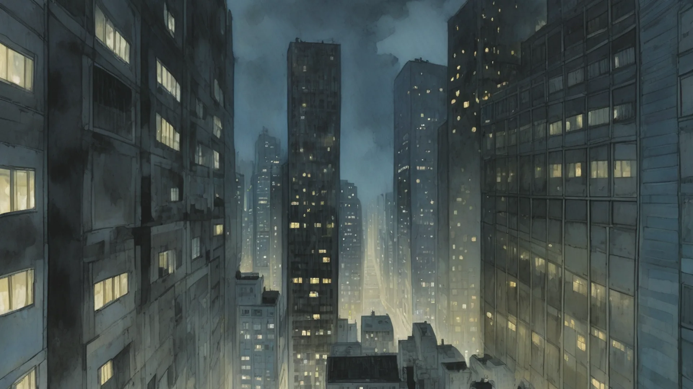
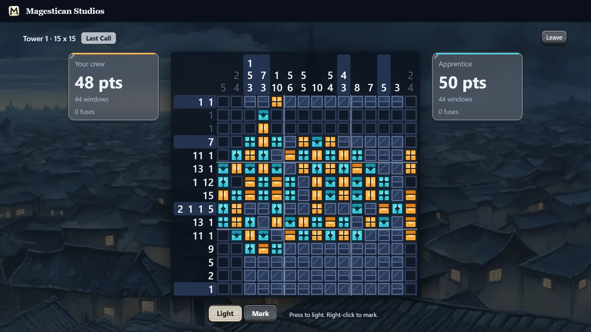
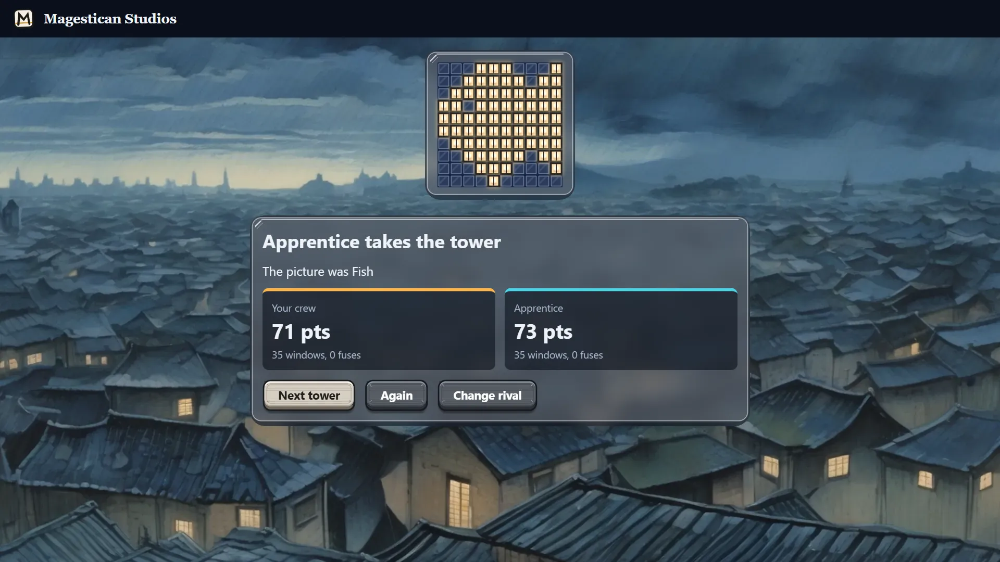

Lamplighters — a picture logic duel for two crews
Lamplighters is a picture logic duel that runs in your browser: two crews race to light the same hidden picture on one night-time tower, at the same moment, with no turns. It works like a nonogram, with numbers beside every row and column, except that your rival is reading the same numbers and reaching for the same windows. It is free, with nothing to download and no account, on a phone or a laptop.


Reading the numbers on a tower
Each number beside a row or above a column gives a run of lit windows, in order, with at least one dark window between runs. A row marked 2 3 holds two lit windows together, a gap, then three more. Put the rows and columns against each other and most windows settle themselves. Every tower in Lamplighters has been checked by our solver: it has one answer, and you can reach it one line at a time, so no tower ever needs a guess.
How a window scores and how a line pays
A right window scores 1 and takes your crew's colour, amber or cyan. Close a row or a column and you collect 2 more for that line, so a single window that closes both at once is worth 5. A finished line also shutters whatever is left of it, for both crews.
This is where the duel lives. A window you can prove may also be the one that hands your rival the last window of a row. Sometimes the better move in Lamplighters is to leave a line one short and work somewhere else, and watch who has to touch it first.
Fuses and the freeze
Wrong fills bring the freeze and the public fuse. The first miss freezes you for 3 seconds, then 5, 8, 13 and 21, and it stays at 21 for the rest of the match. A frozen crew can still write notes on the tower, which is a fair use of the time.
Each miss also leaves a fuse on that window where your rival can read it. You have just told them a window is dark, for free. Our test rival beat a script that tapped blindly every 300 milliseconds in 9 matches out of 10 on 10 x 10, and in every match on 15 x 15, so speed alone will not carry you. The smallest towers are the exception, where a blind tapper wins about half the time, because 15 windows are gone before the long freezes begin.
Tapping a window that is already lit, shut or fused is simply refused, at no cost. Losing a race to a window is not a mistake.
Last Call and the final window
Once three quarters of the windows are lit, Last Call begins. Finishing a line now pays 4 instead of 2. A miss now also puts out the latest window you lit on two unfinished lines, at a cost of one point, and either crew may claim it back. The crew behind has a real way home here, and the crew ahead has every reason to slow down and read.
The match is over when the last window is lit. The higher score takes the tower, a level score is a draw, and the finished tower shows the picture you were lighting all along: a whale, a lantern, a lighthouse, one of 14.
Three tower sizes and three rival crews
There are five towers at 5 x 5, five at 10 x 10 and four at 15 x 15. Choose one, then choose who you are racing. The Apprentice takes its time, the Lamplighter is steady, and the Foreman is quick enough to beat the Lamplighter almost every time on the larger towers. All three read only what you can see on the screen and light only what the numbers prove, so a rival never knows the answer in advance.
We timed the rivals against each other, where a 5 x 5 tower lasts about 13 seconds and a 15 x 15 about three minutes. You will take longer, because you have to read.
Playing a friend, and watching
Create a room and you get an invite link to send and a room code to read out. Your friend opens it and takes the other crew, with no account, and a three-second count starts the climb on both screens. The Watch link lets anyone else follow the match without touching it. If a player leaves, the tower goes to the one who stayed, and the next friend to arrive can take the free chair.
Notes and playing on a phone
Marks are your own notes for a window you have ruled out, and your rival never sees them. Right-click to mark with a mouse, or hold a finger on the window. On a phone the Mark button lets you drag across a whole run.
On a phone a 15 x 15 tower has small windows, so the game changes how it listens. The first tap aims and the second lights, which keeps a stray thumb from costing you a freeze.
What is still rough
The speeds of the three rivals came from scripts that measure them, and no person's play went into them, so the Apprentice may feel too quick or too slow for you. The game's words come in eight languages, and no native reader has checked the seven beyond English yet. This page is in English only. We keep no count of plays for Lamplighters on this site, and the game earns no badges and gets no place on your shelf yet.
More like this: 2-player games online · Multiplayer browser games